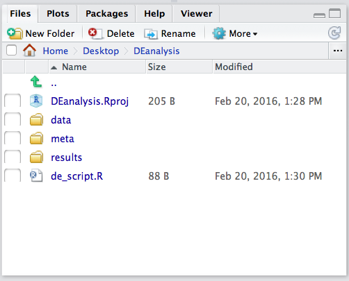
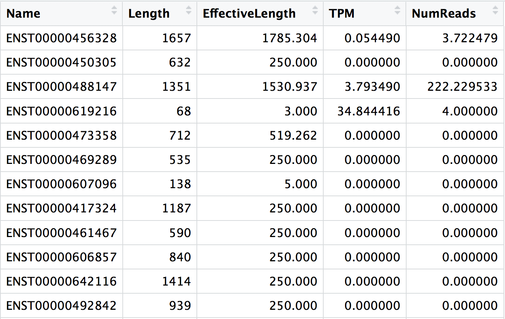

# HBC RNA-seq DGE workshop
# Gene-level differential expression analysis using DESeq2Set up and overview for gene-level differential expression analysis
Approximate time: 60 minutes
Learning Objectives
- Describe the RNA-seq and differential gene expression analysis workflows
- Explain the experiment and its objectives
- Create a project in R
- Set up for the analysis of RNA-seq data
Differential gene expression analysis
Over the past decade, RNA sequencing (RNA-seq) has become an indispensable tool for transcriptome-wide analysis of differential gene expression and differential splicing of mRNAs (Stark R et al., 2019). The correct identification of which genes/transcripts are changing in expression between specific conditions is key in our understanding of the biological processes that are affected.
In this workshop, we will walk you through an end-to-end gene-level RNA-seq differential expression workflow using various R packages. We will start with reading in data obtained from Salmon, convert pseudocounts to counts, perform exploratory data analysis for quality assessment and to explore the relationship between samples, perform differential expression analysis, and visually explore the results prior to performing downstream functional analysis.
Review of the dataset
For this workshop, we will be using a publicly available RNA-seq dataset that is part of a larger study described in Kenny PJ et al., 2014.
The RNA-seq was performed on HEK293F cells that were transfected either with a MOV10 transgene, siRNA to knock down Mov10 expression, or non-specific (irrelevant) siRNA. This resulted in 3 conditions Mov10 oe (over expression), Mov10 kd (knock down) and Irrelevant kd, respectively. The number of replicates is as shown below.
Using these data, we will evaluate transcriptional patterns associated with perturbation of MOV10 expression. Please note that the irrelevant siRNA will be treated as our control condition.

What is the purpose of these datasets? What does Mov10 do?
The authors are investigating interactions between various genes involved in Fragile X syndrome, a disease in which there is aberrant production of the FMRP protein.
FMRP, a protein that is “most commonly found in the brain, is essential for normal cognitive development and female reproductive function. Mutations of this gene can lead to fragile X syndrome, intellectual disability, premature ovarian failure, autism, Parkinson’s disease, developmental delays and other cognitive deficits.” - from Wikipedia
MOV10 is a putative RNA helicase that is also associated with FMRP in the context of the microRNA pathway.
The hypothesis the paper is testing is that FMRP and MOV10 associate and regulate the translation of a subset of RNAs.

Our questions:
- What patterns of expression can we identify with the loss or gain of MOV10?
- Are there any genes shared between the two conditions?
RNA-seq workflow
For this dataset, raw sequence reads were obtained from the Sequence Read Archive (SRA). These reads were then processed using the RNA-seq workflow as detailed in the pre-reading for this workshop. All steps were performed on the command line (Linux/Unix), including a thorough quality control assessment. If you are interested, we have the MultiQC html report for this dataset linked here for you to peruse.
The directories of output from the mapping/quantification step of the workflow (Salmon) is the data that we will be using. These transcript abundance estimates, often referred to as ‘pseudocounts’, will be the starting point for our differential gene expression analysis.
Setting up
Let’s get started by opening up RStudio and setting up a new project for this analysis.
- Go to the
Filemenu and selectNew Project. - In the
New Projectwindow, chooseNew Directory. Then, chooseNew Project. Name your new directoryDEanalysisand then “Create the project as subdirectory of:” the Desktop (or location of your choice). - The new project should automatically open in RStudio.

To check whether or not you are in the correct working directory, use getwd(). The path Desktop/DEanalysis should be returned to you in the console. Within your working directory, use the New folder button in the bottom right panel to create three new directories: scripts, meta, and results. Remember the key to a good analysis is keeping organized from the start! (NOTE: we will be downloading our data folder.)
Now we need to grab the files that we will be working with for the analysis. There are two things we need to download.
- First we need the Salmon results for the full dataset. Right click on the links below, and choose the “Save link as …” option to download directly into your project directory:
- Salmon data for the Mov10 full dataset
Once you have the zip file downloaded you will want to decompress it. This will create a data directory with sub-directories that correspond to each of the samples in our dataset.
- Next, we need the annotation file that maps our transcript identifiers to gene identifiers. We have created this file for you using the R Bioconductor package AnnotationHub. For now, we will use it as is, but later in the workshop we will spend some time showing you how to create one for yourself. Right click on the links below, and choose the “Save link as …” option to download directly into the
datafolder in your project directory.
Finally, go to the File menu and select New File, then select R Script. This should open up a script editor in the top left hand corner. This is where we will be typing and saving all commands required for this analysis. In the script editor, type in header lines:
Now save the file as de_script.R within the scripts directory. When finished, your project directory should now look similar to this:

Finally, make sure you change working directory to the scripts folder to ensure that all the file paths will be correct when we run our scripts. You can change this by going to the top menu bar and selecting Session > Set Working Directory > To Source File Location (because the script we have open is saved to this folder) or by running the code below in your console:
# Make sure we are working from the folder where our script is saved
setwd("./scripts")Loading libraries
For this analysis we will be using several R packages, some which have been installed from CRAN and others from Bioconductor. To use these packages (and the functions contained within them), we need to load the libraries. Add the following to your script and don’t forget to comment liberally!
# Setup
# Bioconductor and CRAN libraries used
library(DESeq2)
library(tidyverse)
library(RColorBrewer)
library(pheatmap)
library(DEGreport)
library(tximport)
library(ggplot2)
library(ggrepel)Loading data
The main output of Salmon is a quant.sf file, and we have one of these for each individual sample in our dataset. A screenshot of the file is displayed below:

For each transcript that was assayed in the reference, we have:
- The transcript identifier
- The transcript length (in bp)
- The effective length (described in detail below)
- TPM (transcripts per million), which is computed using the effective length
- The estimated read count (‘pseudocount’)
What exactly is the effective length?
The effective length for a transcript is the essentially the number of possible start positions for a read or fragment within that transcript. The sequence composition of a transcript affects how many reads are sampled from it. While two transcripts might be of identical actual length, depending on the sequence composition we are more likely to generate fragments from one versus the other. The transcript that has a higher likelihood of being sampled will end up with the larger effective length. The effective length is transcript length that has been “corrected” to include factors due to sequence-specific and GC biases.
We will be using the R Bioconductor package tximport to prepare the quant.sf files for DESeq2. The first thing we need to do is create a variable that contains the paths to each of our quant.sf files. Then we will add names to our quant files, which will allow us to easily distinguish between samples in the final output matrix.
# List all directories containing data
samples <- list.files(path = "../data", full.names = TRUE, pattern = "salmon$")
# Obtain a vector of all filenames including the path
files <- file.path(samples, "quant.sf")
# Since all quant files have the same name, it is useful to have names for each element
names(files) <- str_replace(samples, "../data/", "") %>%
str_replace(".salmon", "")Our Salmon index was generated with transcript sequences listed by Ensembl IDs, but tximport needs to know which genes these transcripts came from. We will use the annotation table that we downloaded to extract transcript to gene information.
# Load the annotation table for GrCh38
tx2gene <- read.delim("../data/tx2gene_grch38_ens94.txt")
# Take a look at it
tx2gene %>% head() tx_id ensgene symbol
1 ENST00000387314 ENSG00000210049 MT-TF
2 ENST00000389680 ENSG00000211459 MT-RNR1
3 ENST00000387342 ENSG00000210077 MT-TV
4 ENST00000387347 ENSG00000210082 MT-RNR2
5 ENST00000612848 ENSG00000276345 AC004556.1
6 ENST00000386347 ENSG00000209082 MT-TL1tx2gene is a three-column data frame linking transcript ID (column 1) to gene ID (column 2) to gene symbol (column 3). We will take the first two columns as input to tximport. The column names are not relevant, but the column order is (i.e., transcript ID must be first).
Now we are ready to run tximport.
?tximport # let's take a look at the arguments for the tximport functionThe tximport() function imports transcript-level estimates from various external software (e.g., Salmon, Kallisto) and summarizes to the gene-level (default) or outputs transcript-level matrices. There are optional arguments to use the abundance estimates as they appear in the quant.sf files or to calculate alternative values.
For our analysis we need non-normalized or “raw” count estimates at the gene-level for performing DESeq2 analysis.
Since the gene-level count matrix is a default (txOut=FALSE) there is only one additional argument for us to modify to specify how to obtain our “raw” count values. The options for countsFromAbundance are as follows:
no(default): This will take the values in TPM (as our scaled values) and NumReads (as our “raw” counts) columns, and collapse it down to the gene-level.scaledTPM: This is taking the TPM scaled up to library size as our “raw” counts.lengthScaledTPM: This is used to generate the “raw” count table from the TPM (rather than summarizing the NumReads column). “Raw” count values are generated by using the TPM value x featureLength x library size. These represent quantities that are on the same scale as original counts, except no longer correlated with transcript length across samples.
Let’s review how TPM values are calculated:
- Divide the read counts by the length of each gene in kilobases. This gives you reads per kilobase (RPK).
- Count up all the RPK values in a sample and divide this number by 1,000,000. This is your “per million” scaling factor.
- Divide the RPK values by the “per million” scaling factor. This gives you TPM.
# Run tximport
txi <- tximport(files, type = "salmon", tx2gene = tx2gene[,c("tx_id", "ensgene")],
countsFromAbundance = "lengthScaledTPM")
An additional argument for
tximport
When performing your own analysis, you may find that the reference transcriptome file you obtain from Ensembl will have version numbers included on your identifiers (i.e., ENSG00000265439.2). This will cause a discrepancy with the tx2gene file, since the annotation databases don’t usually contain version numbers (i.e., ENSG00000265439). To get around this issue you can use the argument ignoreTxVersion = TRUE. The logical value indicates whether to split the tx id on the ‘.’ character to remove version information, for easier matching.
Viewing data
The txi object is a simple list containing matrices of the abundance, counts, and length. Another list element ‘countsFromAbundance’ carries through the character argument used in the tximport call. The length matrix contains the average transcript length for each gene, which can be used as an offset for gene-level analysis.
attributes(txi)$names
[1] "abundance" "counts" "length"
[4] "countsFromAbundance"We will be using the txi object as is for input into DESeq2, but will save it until the next lesson. For now let’s take a look at the count matrix. You will notice that there are decimal values, so let’s round to the nearest whole number and convert it into a dataframe. We will save it to a variable called data that we can play with.
# Look at the counts
txi$counts %>% head() Irrel_kd_1 Irrel_kd_2 Irrel_kd_3 Mov10_kd_2 Mov10_kd_3
ENSG00000000003 4375.751722 3645.483112 2968.36018 6177.539799 3688.16902
ENSG00000000005 27.259410 29.304293 23.31638 36.534194 13.14787
ENSG00000000419 1478.158556 1287.569549 883.63968 2368.544452 1339.80470
ENSG00000000457 507.916351 404.538329 357.20364 934.274776 571.37608
ENSG00000000460 1393.739749 1164.378205 849.77430 2172.300020 1217.31401
ENSG00000000938 1.058214 1.054427 0.00000 1.780558 0.00000
Mov10_oe_1 Mov10_oe_2 Mov10_oe_3
ENSG00000000003 3343.09841 3114.21097 2079.30559
ENSG00000000005 25.25078 38.11501 22.47582
ENSG00000000419 1889.59603 1766.32555 1271.05675
ENSG00000000457 646.46620 591.44175 354.09067
ENSG00000000460 1183.43712 1138.51245 673.14907
ENSG00000000938 0.00000 0.00000 0.00000# Write the counts to an object
data <- txi$counts %>%
round() %>%
data.frame()
What if I don’t have Salmon pseudocounts as input?
Until recently, the standard approach for RNA-seq analysis had been to map our reads using a splice-aware aligner (e.g., STAR) and then use the resulting BAM files as input to counting tools like featureCounts and htseq-count to obtain our final expression matrix. The field has now moved towards using lightweight alignment tools like Salmon as standard practice. If you are still working with data generated using the older standard approach we have some materials linked here on using DESeq2 with a raw count matrix as your starting point.
Creating metadata
Of great importance is keeping track of the information about our data. At minimum, we need to at least have a file which maps our samples to the corresponding sample groups that we are investigating. We will use the column headers from the counts matrix as the row names of our metadata file and have a single column to identify each sample as “MOV10_overexpression”, “MOV10_knockdown”, or “control”.
# Create a sample table / metadata
sampletype <- factor(c(rep("control", 3),
rep("MOV10_knockdown", 2),
rep("MOV10_overexpression", 3)))
meta <- data.frame(sampletype, row.names = colnames(txi$counts))Now we are all set to start our analysis!